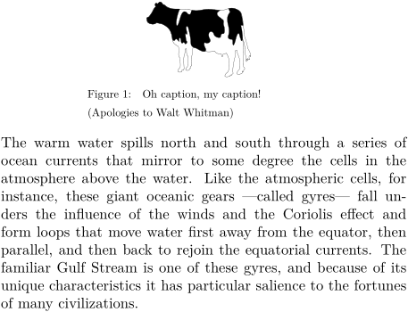

Syntax (autogenerated)
| \setupcaptions[...,...][...=...,...] | |
| [...,...] | name |
| ...=...,... | inherits from \setupcaption |
Syntax
Description
| location | The first option defines the location of the caption relative to the figure itself. The option [location=right] e.g. puts the caption on the right of the figure. The values of the location can be combined, so that [location={right,low}] adjusts the caption position to be to the right of the figure and in a low vertical position.
|
| width | This is the width of the figure caption. If you do not like default captions that are driven by figure (table) width, try: \setupcaptions[minwidth=\textwidth, align=middle]
|
| headstyle | This defines the formatting of the label, i.e. usually the word figure or table and its number. For example, [headstyle=\it] will change it to italic.
|
| style | The formatting of the text of the caption, use [style=\it] to get an italic text. Several values can be given using curly brackets: [style={\it\tfx}]. Please note, that some formatting (such as font size) will affect the head as well.
|
| number | The option [number=no] suppresses the label and figure number.
|
| inbetween | The macros given here are executed after placing the figure and before placing the caption. To set the space between figure and caption to zero use [inbetween=]
|
| align | This can change the alignment of the caption. It can lead to confusion, since left and right means raggedleft and raggedright. So to align a caption flush left, use [align=flushleft].
|
| numberconversion | Here, it is possible to change the number of the e.g. figure. romannumerals means, well, roman numerals, the capitalized version capitalizes the number as well. In MkIV, numberconversion must be used instead of conversion. Example: numberconversion=Romannumerals
|
| conversion | This is the MkII version of numberconversion. |
| way | Using option [way=bysection] resets the numbering to 1 at each new section, but does not prefix the numbers with the section number, to do that, use the following options: \setupcaptions[way=bysection,prefixsegments=section]. If one has only a small number of figures and wishes to label them sequentially from 1 to n, the following works:\setupcaptions[way=bytext, prefixsegments=none].
Note that the word "section" in |
| stopper | MKII only. The stopper text follows the number and, if present, the suffix, and precedes the caption text. It does not appear in references. |
| numberstopper | MKIV only. The numberstopper text follows the number and, if present, the suffix, and precedes the caption text. It does not appear in references. |
| separator | The separator (in MKIV, prefixconnector) text separates components of the number in the caption and in references when sectioned numbers are used. |
| suffix | The suffix text immediately follows the number in the caption and in references. |
| prefixsegments | To have a figure number such as Figure 2.3, where 2 is the section number and 3 the figure number, you can use this option. Normally, you want to reset the figure number with every section as well, so that Figure 2.1 follows Figure 1.12 instead of Figure 2.13. Therefore, you have to use \setupcaptions[prefix=yes,way=bysection,prefixsegments=section].
|
| spaceafter | Add some vertical space after the caption. |
Example
-
\setuppapersize[A6] \setupexternalfigures[location=default] \setupcaptions[ style={\tfx\setupinterlinespace[line=10pt]}, headstyle=\rm, numberstopper={:}] \placefigure {Oh caption, my caption!\crlf (Apologies to Walt Whitman)} {\externalfigure[cow][width=2cm]} \input linden
- 
See also
Help from ConTeXt-Mailinglist/Forum
All issues with: